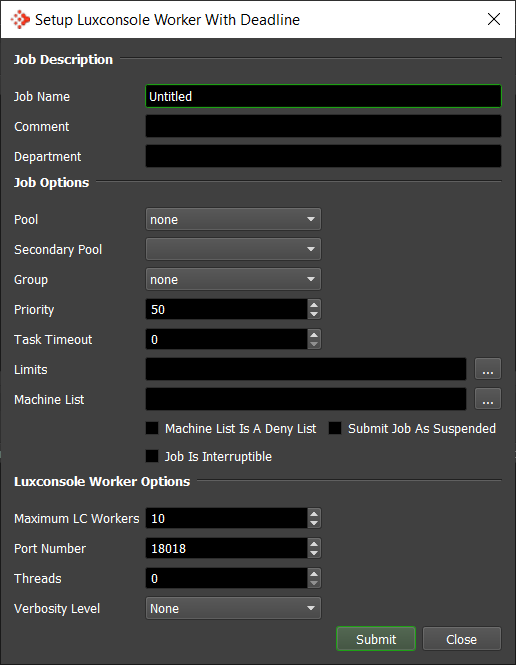
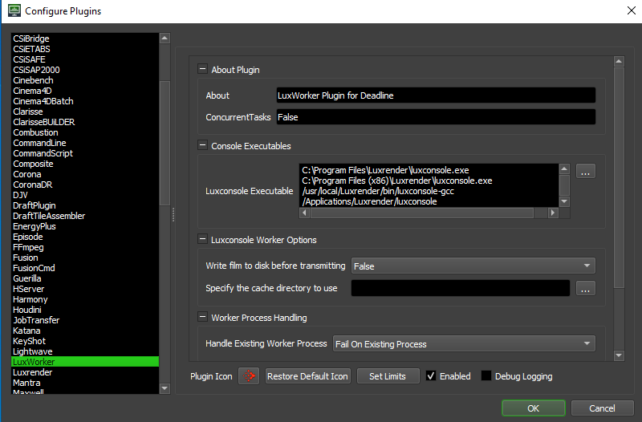

LuxWorker¶
Job Submission¶
You can submit LuxRender Worker jobs from the Monitor, which can be used to reserve render nodes for distributed rendering. Note, you will need to manually configure/update your locally running LuxRender UI “network” queue to point to the correct, corresponding Deadline Workers or IP addresses, over an identical port number.
Submission Options¶
The general Deadline options are explained in the Job Submission documentation. The LuxWorker specific options are:
Maximum LC Workers: The maximum number of Luxconsole Workers to reserve for distributed rendering.
Port Number: Override the default Luxconsole Worker TCP port number of 18018 to use.
Threads: The number of threads to use. Specify 0 to use the same number of threads as there are CPUs.
Verbosity Level: The level of verbosity to use.
Plugin Configuration¶
You can configure the LuxWorker plugin settings from the Monitor. While in power user mode, select Tools -> Configure Plugins and select the LuxWorker plugin from the list on the left.
Console Executables
Luxconsole Executable: The path to the luxconsole executable file used for rendering. Enter alternative paths on separate lines.
Luxconsole Worker Options
Write film to disk before transmitting: Write film to disk before transmitting.
Specify the cache directory to use: Specify the local cache directory to use instead of the default: local user’s temp directory.
Worker Process Handling
Handle Existing Worker Process: Either Do Nothing, FAIL on existing Worker process or KILL the existing Worker process if already running.
Worker Session Timeout
Worker Session Auto Timeout Enable: Enable to force Worker Session to be marked as complete after a Worker Session closes on a Deadline Worker.
Worker Session Auto Timeout (Seconds): Worker Session minimum timeout before last closed Worker Session is marked as complete on Deadline Worker (seconds).
FAQ¶
Currently, there are no FAQs for this plugin.
Error Messages and Meanings¶
This is a collection of known LuxWorker error messages and their meanings, as well as possible solutions. We want to keep this list as up to date as possible, so if you run into an error message that isn’t listed here, please contact Deadline Support and let us know.
Currently, no error messages have been reported for this plugin.

{kind=link}
{kind=link}